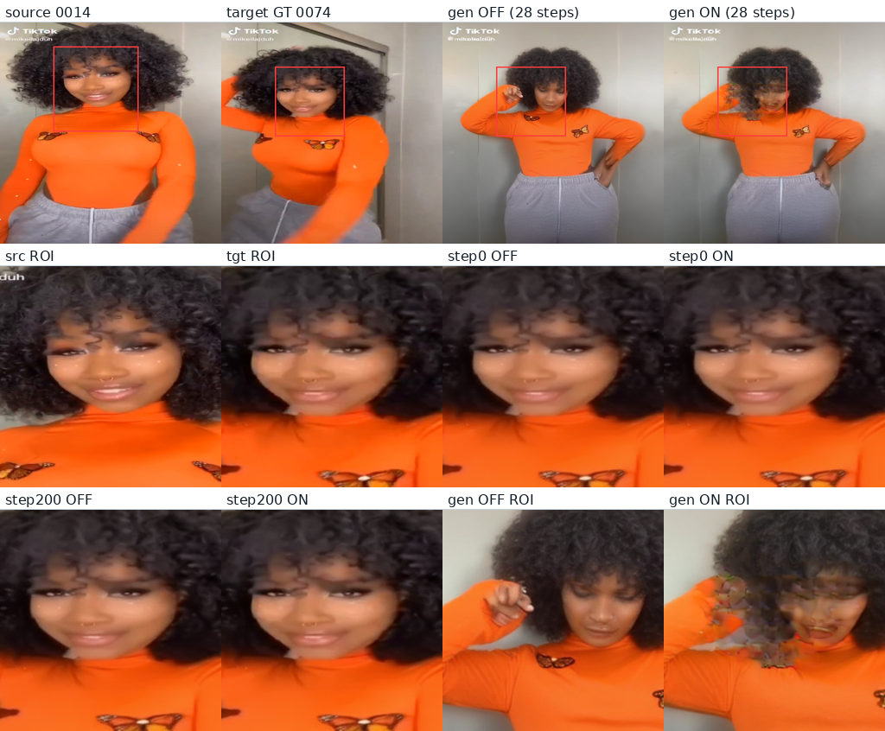

tiktok_v65_face_overfit_00001 及其生成对照 tiktok_v65_pure_inference ·
序列 00001，源帧 0014 → 目标帧 0074 · V6.5 独立 Face 分支，200 步单样本过拟合该实验在“训练点单步指标”上成立，但在“真实多步生成”上不成立，且方向是负面的。 32 步真实采样中，开启 Face 分支后——身份相似度下降、LPIPS 变差、关键点误差变大，人脸区域出现肉眼可见的崩坏伪影。 成因已定位：Face 分支只在单一时间步（t=150）被训练，却在 t<650 的整个区间都被激活， 在未训练区间的输出是有害的。
0014（索引 13）→ 目标帧 0074（索引 73）align_mode="resize"，非等比裁剪）t=150（σ=0.15），单步去噪监督，耗时 64 s[0.241, 0.109, 0.625, 0.494]，目标 [0.244, 0.201, 0.557, 0.514]① 身份参照本身有差距。源帧与目标帧的 ArcFace 余弦相似度为 0.7313， 落在该序列全部帧对分布的中下位置（均值 0.783，p05=0.634，p95=0.943）。原因是舞蹈动作带来的姿态差异。 这意味着“与源帧人脸”的可达上限本来就不是 1.0。
② 监督信号与被评参照是同一张图。训练用的 target_crop 与验证用的
target_crop 都取自目标帧 0074 的人脸像素——训练集即测试集。
这是单样本过拟合实验的固有性质，因此它只能证明“可拟合”，不能证明“学会了泛化”。
我复用了训练脚本自身的裁剪与度量实现，对 9 个训练快照重算指标，并补上训练脚本没有报告的量。
| 快照 | FaceSim vs 目标 ON / OFF |
FaceSim vs 源 ON / OFF |
LPIPS vs 目标 ON / OFF |
ROI PSNR ON / OFF |
全图 PSNR ON / OFF |
关键点 NME ON / OFF |
|---|---|---|---|---|---|---|
| step 0（未训练） | 0.97615 / 0.97612 | 0.79328 / 0.79328 | 0.02870 / 0.02870 | 36.04 / 36.04 | 36.66 / 36.66 | 0.000531 / 0.000531 |
| step 75（峰值） | 0.99471 / 0.97612 | 0.79498 / 0.79328 | 0.01746 / 0.02870 | 38.18 / 36.04 | 37.09 / 36.66 | 0.000415 / 0.000531 |
| step 125 | 0.99428 / 0.97612 | 0.80188 / 0.79328 | 0.01675 / 0.02870 | 38.55 / 36.04 | 37.20 / 36.66 | 0.000396 / 0.000531 |
| step 200（末步） | 0.98825 / 0.97612 | 0.78842 / 0.79328 | 0.01575 / 0.02870 | 38.79 / 36.04 | 37.33 / 36.66 | 0.000258 / 0.000531 |
0.976。原因很直接：σ=0.15 时
noisy = 0.85·target + 0.15·noise，输入里已含 85% 的目标帧信息，单步 x0 估计天然接近答案。
这是输入泄漏，不是模型能力。可提升的区间被压缩在 0.019 之内。这是本实验唯一的“真实生成”产物：28 步采样、CFG 4.0、从 100% 随机噪声起步，ON/OFF 同 seed 同条件。
| 指标 | Face OFF | Face ON | Δ | 判读 |
|---|---|---|---|---|
| FaceSim vs 目标帧 | 0.46581 | 0.43353 | −0.03228 | 恶化 |
| FaceSim vs 源帧 | 0.42065 | 0.41975 | −0.00090 | 恶化 |
| LPIPS vs 目标帧 | 0.48027 | 0.50019 | +0.01992 | 恶化 4.1% |
| 关键点 NME | 0.01035 | 0.01089 | +5.2% | 恶化 |
| ROI PSNR | 12.05 | 12.33 | +0.28 dB | 略好 |
| ROI SSIM | 0.27203 | 0.28678 | +0.0148 | 略好 |
| ROI 内 ON-OFF 差异强度 | ROI 内 1.46e-2 / ROI 外 2.5e-4 = 58.5× | 选择性好 | ||

第 1 行：全图（红框为目标人脸框）；第 2–3 行：ROI 放大（padding 30%）。 注意第 1 行第 3、4 格与第 3 行最后两格：gen OFF 的脸清晰、可辨认且与源人物一致； gen ON 的脸出现明显崩坏、拖影与结构伪影。单步快照（step0/step200）的 ON/OFF 差异则几乎不可见。
我怀疑问题出在 训练与推理的条件不匹配。检查强度调度后发现关键事实：
Face 分支的生效窗是 progress ∈ [0.35, 1.0]，即 t < 650 的每一步都会介入，
而训练只在 t=150 一个点上做过。中间是一整片“注入但从未训练”的区域。
| t | σ | Face 调度乘子 | FaceSim OFF → ON | LPIPS OFF → ON | ΔLPIPS | 结论 |
|---|---|---|---|---|---|---|
| 80 | 0.08 | 0.963 | 0.98928 → 0.99152 | 0.01242 → 0.01298 | +0.00056 | 轻微变差 |
| 150 | 0.15 | 0.874 | 0.97918 → 0.98743 | 0.02805 → 0.01509 | −0.01295 | 训练点：显著改善 (−46%) |
| 250 | 0.25 | 0.677 | 0.96083 → 0.95824 | 0.05478 → 0.05986 | +0.00508 | 变差 |
| 350 | 0.35 | 0.440 | 0.94720 → 0.93519 | 0.08080 → 0.09762 | +0.01682 | 最差 |
| 450 | 0.45 | 0.216 | 0.93599 → 0.94413 | 0.11018 → 0.11677 | +0.00659 | 变差 |
| 550 | 0.55 | 0.057 | 0.87896 → 0.90745 | 0.14045 → 0.13814 | −0.00230 | 略好（介入已很弱） |
| 640 | 0.64 | 0.001 | 0.69756 → 0.69756 | 0.25006 → 0.25006 | 0.00000 | 未介入，ON≡OFF |
t=150 重跑得到 LPIPS OFF/ON = 0.02805 / 0.01509，
而实验记录（step 200）为 0.02873 / 0.01510——ON 值几乎完全重合。
FaceSim 也吻合（0.97918/0.98743 vs 0.97859/0.98588）。这既验证了我的复现链，
也独立证实了实验日志本身是可信的。
| 指标 | 能否支撑结论 | 原因 |
|---|---|---|
| LPIPS（人脸 ROI） | 可用 | 单调、区分度好、跨 ON/OFF 一致、且能独立复现（0.01509 vs 0.01510） |
| FaceSim vs 目标帧 | 谨慎 | σ=0.15 时基线已 0.976，动态范围仅 0.019，且非单调；噪声大 |
| FaceSim vs 源帧 | 可用（关键） | 不易饱和（基线 0.793），且直接对应“身份保持”这一任务目标 |
| 关键点 NME | 不敏感 | 绝对值量级仅 2e-4~5e-4（0.02%~0.05%），分辨率不足，难以分辨真实差异 |
| 全图 PSNR / SSIM | 不可用 | 被背景主导；纯生成下与目标帧像素不对齐，12 dB 的数值与视觉质量脱节 |
| 单步 x0 指标（任何） | 不可单独用作有效性证据 | σ=0.15 时输入含 85% 目标信息，属输入泄漏；与 28 步真实生成结论方向相反 |
fixed_timestep 换成在 [0, 650] 上采样，
或至少覆盖 progress∈[0.35,1.0] 对应的 σ 区间。这是当前负结果的直接成因，改起来最便宜。start_progress
从 0.35 提到 0.7 附近，让分支只在低噪声端介入，先验证伤害是否消失。align_mode="resize" 属各向异性拉伸
（纵向压缩约 1.79 倍），人脸几何被扭曲，会同时污染训练与评测。建议改为 square_crop 或等比缩放。